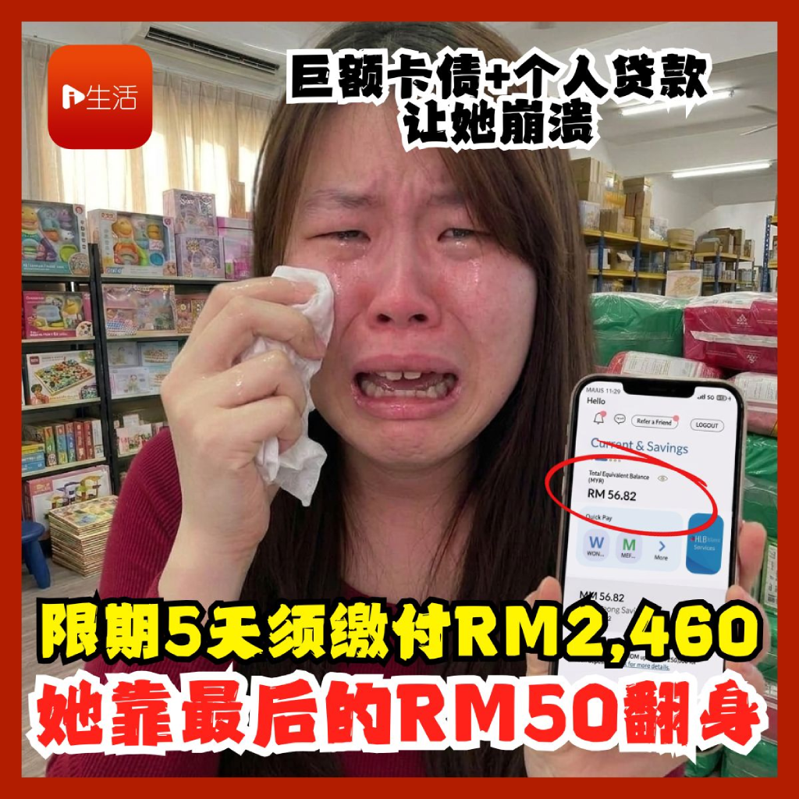
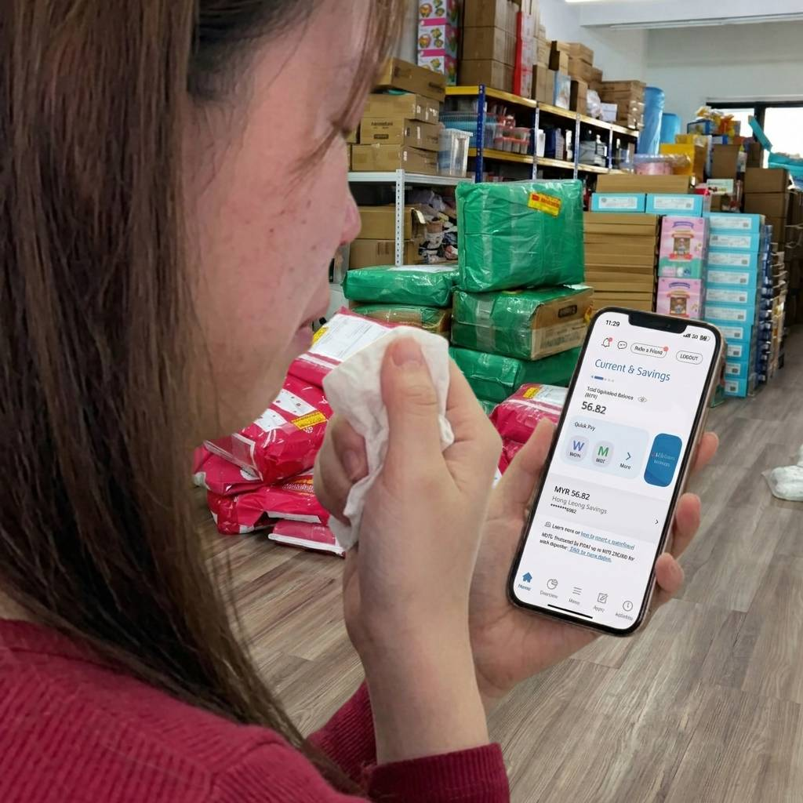
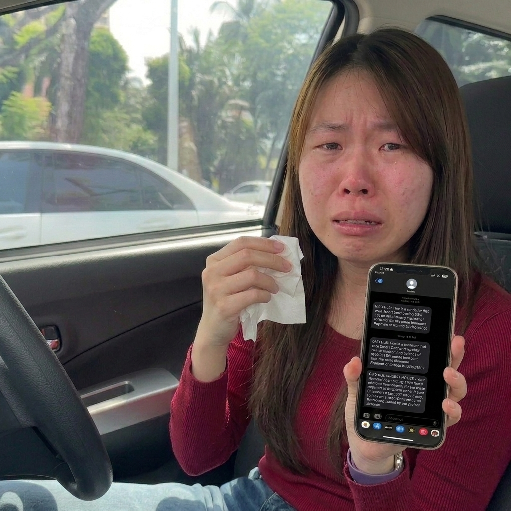
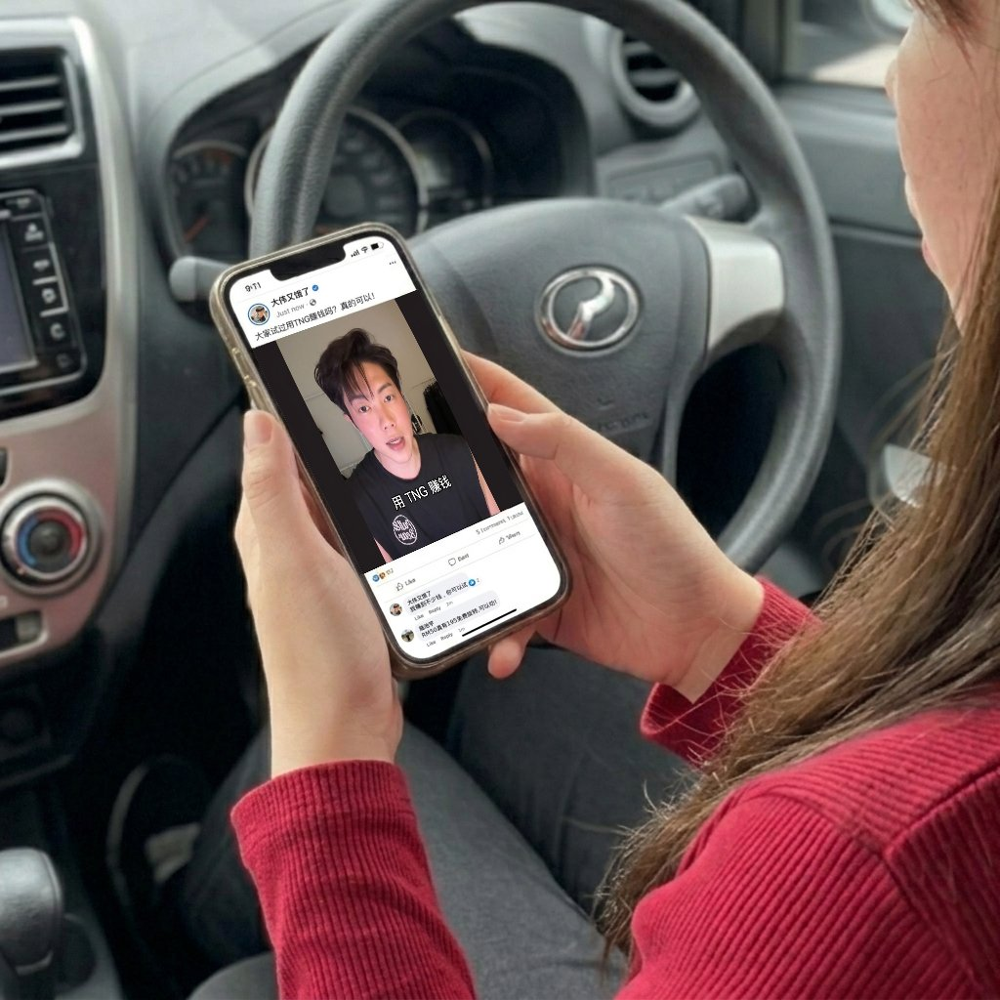
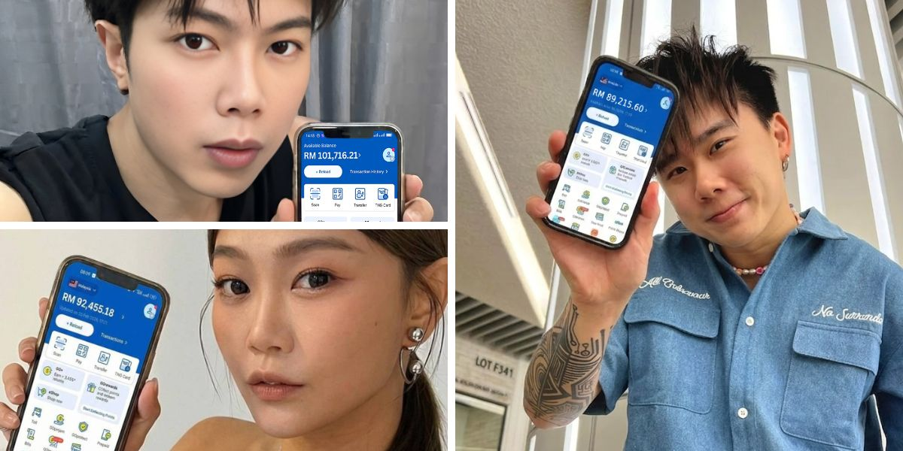
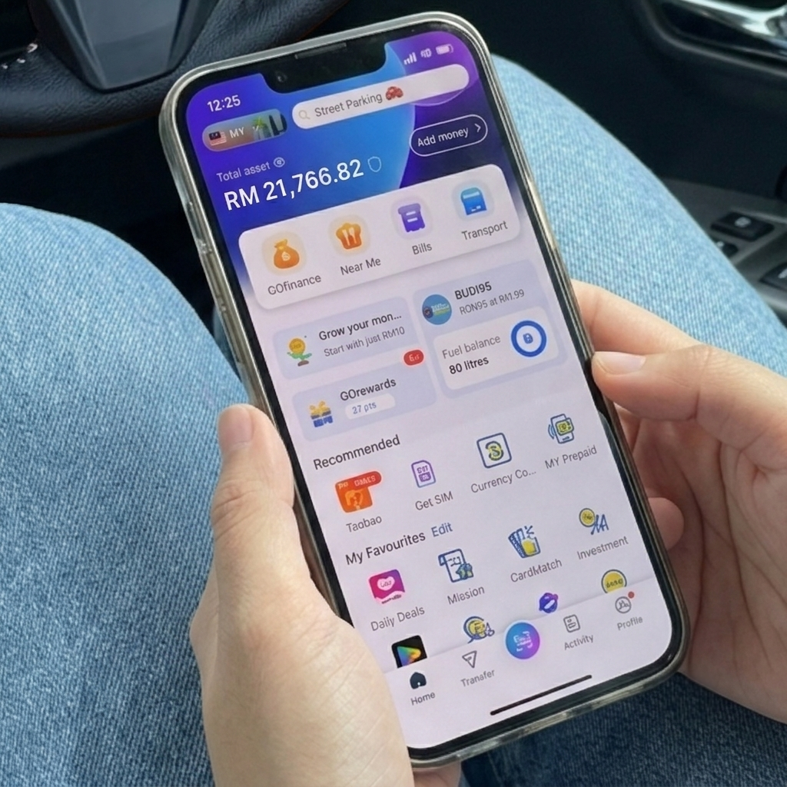
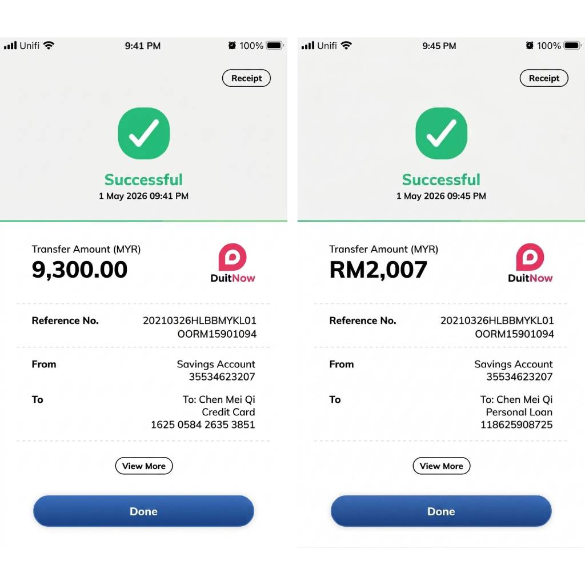

欠 RM9,300 卡债还没清，又欠 RM10,000 个人贷款。星期五前得还上 RM2,460，不然就寄律师信来催债，甚至被迫 bankruptcy，可她户口却只剩 RM56.82...

美琪今年29岁，在 Subang 一间仓库做打包员。即使每天拼命 OT，月薪加起来也只有大约 RM3,500。扣掉 EPF 和 SOCSO 后，到手不到 RM3,000。房租、车贷、车油、电话费、保险和生活开销一扣完，每个月几乎没剩钱。
以为借个人贷款能救命，结果压力更大了。。。

这两年来，每当她遇到额外开销，比如修车、看医生，换tayar，美琪都只能刷信用卡应付。久而久之，信用卡的 minimum payment 越滚越大，压力也越来越重。她本以为申请了一笔 RM10,000 的个人贷款，希望先把信用卡欠款的利息压下来，之后再慢慢的把所有欠款补回来。。
过了几个月，没想到当她打开 M2U 查看信用卡余额时，心里突然咯噔了一下，她愣住了。
她的信用卡 Outstanding Balance，竟然高达 RM9,300。
本想着慢慢还，直到看到银行发来的信息时。。。 她崩溃了
出粮当天，美琪先把房租、保险、电话费和几笔拖着的账单还清。当美琪再次打开 M2U 时，里面竟只剩 RM56.82。
就在这时，手机连续收到两封银行 SMS，她必须在这个星期五前偿还 RM2,460，包括 RM453 的信用卡 Minimum Payment，以及 RM2,007 已经拖欠3期的个人贷款分期。

如果她未能在期限内还款，银行将把案件交由律师处理，并发出 Legal Demand Letter。如果继续再拖下去，严重的话甚至可能被迫 bankruptcy。
看到讯息的那一刻，美琪整个人愣住了。
距离星期五，只剩下几天。可她户口只有 RM56.82。
随便滑了一下 Facebook，没想到她竟然发现。。。
美琪在车里打开 Google，输入 “Personal Loan 拖了3个月没还怎么办”。
她看了几篇文章，越看越怕。legal demand letter、court summons、bankruptcy。
尤其是最后那个字 “bankruptcy”，让她当场崩溃。因为她知道一旦破产，她这辈子就完了。
冷静后，她打开 FB，原本只是想转移注意力。滑了几下，看到一则 YE55 的分享。
里面写着新人 RM50 可以拿 195 次 free spins，也有人放 TNG / DuitNow 到账截图。

美琪第一反应不是相信。是觉得不可能。
她看过太多夸张广告，也知道钱没有那么容易来。她没有马上点进去，而是先看评论，看别人怎么讲。结果她发现不少人都在讨论相同的键字：YE55、RM50、195 次 free spins、TNG / DuitNow 到账。
让她更意外的是，她竟然看到网红大伟晒用 TNG 进账 5位数的 story 截图，也有人 share DIOR大颖的巨额TNG Balance RM 92,455.18 是靠195 free spins “转”出来的。还有 Danny 在视频里 讲一个叫 YE55 的平台，用 TNG 存 RM50 进去，RM89,215出来。

接着她打开 M2U 盯着她的 RM56.82 看了很久。
她知道不能再拖下去了，但问题是，她又能怎样？
美琪看着自己的余额。
RM56.82 留着，最多可以吃两个星期泡面。可是它还不了 RM2,460 的欠款。
也没办法阻止银行 sent legal demand letter。更阻止不到法庭的传票。
她很清楚，这个决定关乎她的未来。
最坏的情况，是 RM50 变成 RM0。
可是如果什么都不做，RM56.82 还是 RM56.82，星期五还是会来，律师信也还是会来。
那一刻，她没有多想。她只是不想收到银行的 legal demand letter。
她打开链接，注册 YE55，用 TNG deposit RM50。
系统显示：195 次 free spins 已激活。
她选了 Gates of Olympus，按下去。
就在她准备结束的时候，画面突然变了…
前面十几轮，画面没有什么变化。
余额上上下下，有时候加一点，又很快掉回去。
美琪越看越安静。
她开始后悔。
她想，是不是自己又做了错的决定。
过了几秒，突然进了 free round。
Multiplier 一个接一个跳出来。
美琪一开始还没反应过来，只看到余额从几十跳到几百，再跳到几千。
她整个人吓傻了。
最后画面停下来时，金额显示 RM21,760。
她盯着手机。第一反应不是笑。
而是认真的数了数。
RM21,760
手机“叮”的那一刻，她突然沉默了。。。
美琪第一时间按 withdrawal。
按完之后，她整个人比刚才更紧张。
第1分钟，没有通知。
第2分钟，她开始怀疑是不是资料填错。
第3分钟，她又回去看 withdrawal status。
差不多第5分钟，手机突然 “叮” 一声。
DuitNow 通知跳出来。
RM21,760 到账。

那一刻，她坐在 parking lot 车里，很久没有动。
因为她终于有钱还债了。
她没有变成有钱人，但至少不再被生活逼到无路可退…
钱到账后，美琪没有乱花。
她赶紧打开 M2U，先把逾期了3个月的个人贷款 RM2,007 给付了。
然后把 credit card outstanding， RM9,300 全还清了。
再把一部分钱留着当应急基金，因为她知道，如果没有应急基金，她很快又会掉回到同一个循环里。

做完这些，她才发现自己的手还在抖。
不是因为兴奋。 而是因为她终于不用再担心这个星期五的 legal demand letter。
那晚她回到 studio room，第一次没有马上躺下滑手机。
她拿出纸，写下接下来三个月要怎样还钱个人贷款。
那不是很厉害的计划。
但至少，她终于有一点空间可以计划。
一个仓库打包员的 RM50，但这个入口只要 RM50
美琪不是老板，也不是高收入的人。
她只是一个每个月靠底薪和 OT 拿 RM3,500 左右的仓库打包员。
她也不是没有努力工作。
她只是曾经用个人贷款 cover credit card，结果生活继续压下来，credit card 又刷爆，个人贷款也逾期。
RM50 对别人来说，可能只是普通一餐饭。
对她来说，是本周五律师信来之前，最后还能自己做的一个决定。
YE55 拥有 international license，佘诗曼代言，搭载 Pragmatic Play game engine。TNG / DuitNow 可以处理 deposit 和 withdrawal，新人可以领取 195 次 free spins。
如果你也遇到类似压力，至少先自己看清楚资料、规则和 withdrawal 方式。
不要听别人一句话就决定。
也不要把任何结果当成一定会发生。
如何用 RM50 开始？
第一步：点击下方官方链接进入 YE55 注册页面。
第二步：用 TNG deposit RM50，领取新人 195 次 free spins。
第三步：选择 Gates of Olympus。
第四步：开始转，看 free round 和 multiplier 有没有触发。
第五步：如果有结果，按 withdrawal，奖金可进 TNG / DuitNow。
美琪用 RM50 试了一次，5分钟后先补了个人贷款逾期款，也把 credit card outstanding 压下来。
名额和活动条件可能随时调整，请以官方页面显示为准。
系统状态：目前名额有限，如果点击链接还能注册，说明还没满员。
是否尝试，还是要自行判断，是你自己的决定。
点击这里注册 YE55，领取195次 free spins(由 YE55 提供技术支持，活动条件以官方页面为准)